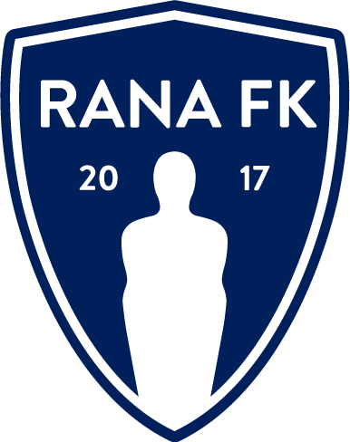

Rana Football Club was founded on December 4, 2017, following a merger between IL Stålkammeratene and Mo IL. In 2018, the club established its youth and junior department, while the men’s top-level football initiative kicked off in 2019 in the 4th division. Currently, the club boasts 400 active members and holds accreditation as a quality club. With high ambitions, the club actively pursues development across multiple fronts.
#ForwardTogether // #Fremoverilag
Rana FK is a development-oriented club, actively striving for improvement across all aspects. Our passion lies in creating accessible activities with the highest possible quality, fostering a learning and enjoyable environment for children and youth.